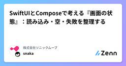

株式会社ソニックムーブのフィード
https://zenn.dev/p/sonicmoov
BtoCサービスのUX・CRM設計とその実現を得意とする、デジタルコミュニケーションデザインに特化した開発会社です。ソニックムーブ所属エンジニアが情報発信していきます。
フィード

Anthropic と Cursor に学ぶ、クラウドで AI に開発を任せる仕組み
株式会社ソニックムーブのフィード
はじめにソフトウェア開発のやり方は、これまでも何度か大きく変わってきました。機械語からアセンブリへ、アセンブリから高級言語へ。抽象度の層が上がるたびに、人は下の層のコードを自分で書かなくなりました。そのぶん人の仕事は「何を作りたいかを伝え、できたものを確認する」側へ移ってきました。いま起きているのも同じ形の変化です。コードの書き手が人から AI に替わり、さらに AI が作業する場所も手元のマシンからクラウドへ広がることで、人は1ステップずつ付き添うのではなく「仕事を渡して、成果物を確かめる」役割へ変わろうとしています。Cursor は、AI 支援の開発を3つの時代に分けてい...
2日前

SwiftUIとComposeで考える『画面の状態』：読み込み・空・失敗を整理する
株式会社ソニックムーブのフィード
はじめにAPIから一覧を取得して表示する。最初はシンプルだった画面も、読み込み表示、0件の案内、エラー表示、再試行を追加すると、条件分岐が増えていきます。「読み込み中なのに、データがありませんと表示される」「再試行に成功したのにエラーが残る」。こうした問題は、UIの部品よりも、画面の状態の持ち方を見直すと整理しやすくなります。この記事では、記事一覧を題材にSwiftUIとJetpack Composeで同じ状態設計を実装します。両OSで揃えるのはクラス構成ではなく、どの状況で何を表示し、操作するとどの状態へ移るかです。扱う内容は次の3つです。初回読み込みを「読み込み中・空...
2日前

Auto mode時代のClaude Codeを守る。検証済み10キットで始めるセキュリティ対策【全員・チーム・組織別】 11
11
株式会社ソニックムーブのフィード
はじめに株式会社ソニックムーブでフロントエンドエンジニアをしているazarashiです。前回の記事「検証済み10キットで始める、Claude Code時代のGitHubセキュリティ対策」では、GitHub のリポジトリを AI 時代の脅威から守る方法をまとめました。今回は、手元の PC で動く Claude Code そのものを守る方法です。Claude Code は、ファイルを読み、コマンドを実行し、外部と通信できます。便利な反面、悪意のある指示を読み込んだときや、Claude が判断を誤ったときに、秘密情報を読まれる・送られる、ファイルを壊される、守りの設定を外されるおそれ...
3日前
検証済み10キットで始める、Claude Code時代のGitHubセキュリティ対策【チーム・組織別】
株式会社ソニックムーブのフィード
はじめに株式会社ソニックムーブでフロントエンドエンジニアをしているazarashiです。Claude Code の普及で、リポジトリは「人間が読むもの」から「AIも読むもの」に変わりました。それに合わせて、リポジトリを狙う脅威も変わっています。この記事では、AI時代のGitHubリポジトリを狙う3つの方向の脅威と、その対策を、開発の形（全員・チーム・外部入力・組織）ごとに整理しました。対策に必要なファイルは導入キットとしてまとめてあるので、コピペするか、Claude Code に導入を任せるだけで使えます。業務で一般的な private リポジトリを前提にしています。OSS ...
3日前

【2026年版】Cloudflare Workers入門｜作ったアプリを公開する方法
株式会社ソニックムーブのフィード
はじめにAI と一緒にアプリを作る人が増え、「できたけど、どこで公開しよう？」と悩む人も多いと思います。この記事では、その公開先として Cloudflare Workers への載せ方を、アプリの種類別にまとめます。SPA や主要なフレームワークなら、npx wrangler deploy を1回実行するだけ で公開できます。!2026年10月15日時点の情報で、アプリの載せ方は実際にデプロイして確認しています。動作確認環境: Node.js 24 / Wrangler 4.151.0 / create-cloudflare 2.74.0 / vinext 1.2.0 / c...
15日前
技術書を年に数冊しか買わない自分に、O'Reillyのサブスク年$150は割に合うか（ACM経由で契約してMCPまで）
株式会社ソニックムーブのフィード
はじめにオライリーの本は、技術書として信頼できるので、これまでも必要なものを買って読んでいました。自分は紙の本のほうが読みやすいタイプです。ただ、オライリーの本は分厚いものが多く、持ち歩くと重いのが難点でした。そんなとき、オライリーの本がオンラインのサブスクで読み放題になると知って、魅力を感じました。1冊数千円すると、気になっても買うまでには至らない本がけっこうあります。そういう本も気軽に開けるなら、お得に入れる方法があるなら入ってもいいかな、と考えました。そこで、まずは10日間の無料トライアルを始めました。もう一つ気になっていたのが、O'Reillyが公式のMCPサーバーを...
16日前
職能を越えてデザインの品質と向き合うことの難しさとこれから
株式会社ソニックムーブのフィード
はじめに2025年12月に、社内のデザイン標準化プロジェクトの振り返りと今後の展望をまとめました。https://zenn.dev/sonicmoov/articles/design-standardization-project-look-back-2025前回の記事では、今後の方向性として下記の4つを挙げていました。問い合わせの対応フローの自動化デザインデータの品質基準の策定デザインレビューの観点の整理、フローの整備デザイントークンやライブラリの活用促進今回はその続きとして、各項目の進捗と、デザイナーとの協働を通じて見えてきた難しさ、これからの課題をまとめます...
16日前
Claude Codeを並列で回すならOrcaが快適だった
株式会社ソニックムーブのフィード
はじめに株式会社ソニックムーブのエンジニアのnoheです。ここ半年ほどで、実装はほぼAIに任せるようになりました。VS Codeは開いているものの、画面はほぼターミナルで占められ、エディタはプロンプトの下書きにしか使っていませんでした。その中で実装とレビューなどを並行で行なっていると、実装中のブランチが切り替わってしまったり、事故が時々起きる状況でした。そこで1ヶ月ほど前から、エージェントに任せる前提で作られたOrcaに乗り換えてみたのでそちらの紹介をしたいと思います。先に結論です。エディタ中心の環境から乗り換えても、違和感なく使えました。worktreeの作成からセッ...
16日前
home-managerでdotfilesを管理する
株式会社ソニックムーブのフィード
最近NixOSを触っていたのですが、設定記述をするうち、既存のdotfiles管理との衝突にあいました。既存ではMakefile + symlinkによる簡易な管理を行っていました。実際のところ、この管理をそのまま適用することも可能ではあるのですが、 プラットフォーム別の分岐などの課題があり、どうせならnixベースの管理を試してみようと思い立ちました。Nixのエコシステムにはhome-managerというホームディレクトリの環境設定を行うためのツールがあり、マルチプラットフォームに対応しています。こちらを使って、今までの自分のdotfiles管理の置き換えを考えてみます。 動機...
16日前
バックエンドエンジニアがFigma MCPを使って実装してみた（入門編）
株式会社ソニックムーブのフィード
はじめにフロントエンドはjQueryで時が止まっているバックエンドエンジニアが、Claude CodeとFigma MCPを使ってWebサイトのフロントエンドを実装しました。先に結論を書きます。Figma MCPにページ全体のリンクを渡すだけでは、見た目は40点でしたスクショ・アイコンのSVG・インタラクションの指示を足して、やっと70点でした最後にページ全体を読み込み直して余白を合わせ、85点くらいまで上がりました残り15点は人の目で確認して直しました。これに1日2時間×1週間ほどかかっていますMCPは「読み込ませる」だけでは足りません。読み込ませたうえで、何を実装...
1ヶ月前
CSS論理プロパティ、"なんとなく" から卒業する
株式会社ソニックムーブのフィード
はじめにmargin-inline-startとmargin-left、なんとなく使い分けていないだろうか？自分はそうだった。padding-block-startのようなプロパティを、雰囲気で書いていた。「この方向に余白を足す」という感覚で手が動くだけで、なぜ物理プロパティではなく論理プロパティを選んだのか、聞かれたら答えられなかった。動くコードは書けても、選んだ理由を説明できない。これはまずいと思い、ちゃんと調べてみることにした。まだ実務経験も浅く、ベテランエンジニアからすれば当たり前の話かもしれない。それでも、同じように「なんとなく」で書いてしまっている人の参考にな...
1ヶ月前
PRで指摘されがちなBEMの命名とネストをPDFLOCSSで整理してみた
株式会社ソニックムーブのフィード
はじめに株式会社ソニックムーブでフロントエンドエンジニアをしている Ishiguro006 です。この記事で伝えたいことは、HTMLの入れ子を、そのままBEMの命名やSCSSの階層に写す必要はないということです。Elementは基本的に1階層で命名するハイフンを含むElement名は、SCSSで分割せずに書くネストを見直すときは、生成されるCSSも確認する実務のPRレビューで、クラス名やSCSSの階層を深くしすぎていることを指摘されることがあります。 実務で迷っていたこと自分の実装を振り返ると、次のような原因がありそうです。見た目の区切りごとに階層を増やして...
1ヶ月前
AI Slop なテストコードにならないためにどう対処するか？
株式会社ソニックムーブのフィード
はじめにこんにちは。株式会社ソニックムーブでフロントエンドを担当しているy.morimotoです。AIに既存の実装からテストを書かせてみると、大変よくできたテストを生成してくれるようになりました。しかし、後々しっかりレビューしてみると、本来の品質として何を保証しているのかが分からないテストが至るところに散見されました。単に実装からテストを生成させるだけでは、品質を担保できているとは言い難い結果となりました。今年はQAやテスト自動化に関する勉強会に何度か参加し、各社のQAの取り組みやAI活用の取り組みを聞きました。そこでは、各社「テストにおいてどのように品質を担保しながらAIを活...
1ヶ月前
定点撮影ができるアプリ
株式会社ソニックムーブのフィード
定点撮影ができるiOSアプリを試作しました。スマホのカメラを使って同じ風景をできるだけ同じ位置・向きで撮影するのは意外と難しいですよね。それを支援する機能を持ったカメラアプリです。次の画像のような精度で定点撮影できます。このアプリをTestFlightからインストールし、お試しいただくことができます。https://testflight.apple.com/join/mtGMNZZq※注：TestFlightでの配布のため、試用以外でのご利用はご遠慮ください。予告なく配布を終了する場合があります。 使い方 新しい地点を登録する一覧画面右上の「＋」から撮影を開始しま...
1ヶ月前
HTTP/3 を知ったので Docker で動かして仕組みを確かめた
株式会社ソニックムーブのフィード
HTTP/3 というものがあるらしい恥ずかしながら、つい最近 HTTP/3 という存在を知りました。HTTP/2 までは何となく理解しているつもりでしたが、HTTP/3 は「速いらしい」以上のことを何も知らない状態でした。調べてみると、HTTP/3 は HTTP のバージョンアップというより、Web を30年以上支えてきた TCP を捨てて、QUIC という別のプロトコルに土台を載せ替えたものでした。そこまでのことをするには、TCP のままではどうしても解決できない問題があったはずです。この記事では、その「なぜ」から始めて、HTTP/3 がどう解決したのかを追い、最後に Doc...
1ヶ月前
LLMを業務に入れて分かった「オントロジー」の効き方 — 運に頼らないAI運用の骨組み
株式会社ソニックムーブのフィード
はじめに私たちはLINE公式アカウントを使った顧客育成SaaSを開発・運用しています。1年ほど前から、社内の問い合わせ対応・調査・資料作成・コードレビューといった業務に、Claudeベースの常駐AIエージェントを複数体入れて回してきました。正直に言うと、最初の半年で分かったのは「LLMは頼めば答える。でも答えの質は、必要な文脈をAIが検索で引き当てられたかどうかの運に依る」ということでした。ナレッジは数千本たまり、ツール接続（Slack・Notion・Jira・メール・本番データ）も揃った。それでも「今回はうまく見つけた」「今回は見つけられなかった」がずっと続く。この記事は、そ...
1ヶ月前
gherkin と skills でエージェントがブラウザを操作してテストする
株式会社ソニックムーブのフィード
はじめにこんにちは。株式会社ソニックムーブでフロントエンドを担当しているy.morimotoです。フロントエンドにおいて、E2Eテストは必要不可欠なテスト手法ですが、運用を続けていくほど、テストケース作成・テスト実装・テスト修正にかかる工数が増え続け、次第に私たちの作業を圧迫していきます。また、AIを使って開発が高速になった今、E2Eテストは大きなボトルネックになると思います。そこで、ノーコードでAIが自律的にテストを実行する仕組みがあれば運用が楽になるのではないかと思いました。 概要本記事では、自然言語で書かれたテストケースをAIに読み込ませ、自律的にテストを実行する取...
2ヶ月前
iOS テストカバレッジ計測でハマった点
株式会社ソニックムーブのフィード
はじめにiOS アプリのマルチモジュール構成で、テストカバレッジを計測して自動表示する仕組みをCIに組み込みました。要件はシンプルです。サードパーティのカバレッジツールに依存したくない（メンテコスト・供給リスクを避けたい）計測対象を「見たいコード」に絞りたい（ViewModel やロジック層など）CI で自動計測し、結果を README に反映したい結論としては、Apple 標準の xcodebuild + xccov だけでカバレッジを取り、集計は jq + awk の軽量スクリプト、実行は GitHub Actions、という構成に落ち着きました。ただ、ここに至る...
2ヶ月前
LINEミニアプリの同意画面がほぼ消えたので、認可フローと実装への影響を整理する
株式会社ソニックムーブのフィード
2026年8月26日、LINEミニアプリの「チャネル同意の簡略化」に関する認可フローが変更されました。これまでは、チャネル同意の簡略化が有効なLINEミニアプリへ初めてアクセスした際に「簡略化同意画面」または「読み込み画面」が表示されていました。今回の変更でこれらの画面も表示されなくなり、ユーザーはより直接的にLINEミニアプリを起動できるようになっています。参考：LINE Developers ニュースhttps://developers.line.biz/ja/news/1/一見すると「同意画面がなくなって便利になった」だけの変更に見えますが、実装側では openid /...
2ヶ月前
新米エンジニア成長記 #2 〜大文字の英字を使った表現〜
株式会社ソニックムーブのフィード
はじめにフロントエンドエンジニアをしているRyogaです。今回は、Webページの見出しなどでよく使われる大文字の英字を使った表現の最適解を教わったので、私と同じ初学者の方々や、ご存じでない方々に向けてまとめていこうと思います。 大文字の英字を使った表現とは執筆のために気取った言い方をしていますが、大文字の英字を使った表現とは、簡単なものです。例として以下の画像をご覧ください。こちらは弊社のコーポレートサイトから引用したものですが、トップページの見出しに「OUR BUSINESS」という文言が使用されています。この見出しを実装しようと思った時、あなたならどのように実装...
2ヶ月前